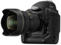

器材库 > 35mm画幅可换镜头数码相机 > D3

规格总览
产品类型
35mm画幅可换镜头数码相机
发布日期
2007-08-23
厂家推荐价格
39,000.00 （人民币）
停产
是
影像规格
影像传感器
CMOS
影像传感器尺寸
36.0 x 23.9mm
总像素
1290万
有效像素
1210万
影像处理器
EXPEED
色彩滤镜
RGB原色彩色滤镜
低通滤镜
感应器件前面，不可移动
色彩空间
Adobe RGB/SRGB
最大解像度
4,256 x 2,832
静态图像格式
JPEG, RAW
静态图像尺寸
FX 格式: 4,256 x 2,832 [L], 3,184 x 2,120 [M], 2,128 x 1,416 [S]; 5:4 (30 x 24): 3,552 x 2,832[L], 2,656 x 2,120 [M], 1,776 x 1,416 [S]; DX 格式: 2,784 x 1,848 [L], 2,080 x 1,384 [M], 1,392 x 920 [S]
画幅比
3:2
镜头和对焦
镜头卡口
Nikon AF
兼容镜头
AF Nikkor；D-型MF Nikkor：AF和部分曝光模式无法使用；非D/G型AF Nikkor/AI-P Nikkor：3D彩色矩阵测光和3D多区平衡填充闪光控制无法使用；Non-CPU AI Nikkor：可在[A]和[M]模式下使用矩阵测光、CW测光和点测光。
对焦系统类型
TTL相位检测
对焦点
51点自动对焦点（15点为十字型）
对焦模式
1) 自动对焦: 单次伺服 AF (S); 连续伺服 AF (C); 根据对象状态自动激活对焦追踪, 2) 电子测距仪手动对焦 (M) 单个AF对焦点可从 51 个或11 个对焦点中选择
AF辅助灯/光
有
手动对焦
支持
曝光控制
测光模式
中央重点测光, 评价测光, 点测光
测光范围
矩阵测光或中央重点测光：0-20EV~点测光：2-20EV
快门类型
电子控制，纵走式，焦平面快门
快门速度
1/8,000 ～30 s, 以 1/3 、1/2 或 1 EV 步长调整; B 门；同步闪光最高可达 1/250s
曝光补偿
±5EV以1/3或1/2或1EV级调整
自动曝光锁
有
自动包围曝光
2～9张, 增量为 1/3、1/2 或 1 EV
连拍
FX格式下每秒9张
闪光灯
闪光同步模式
前帘同步, 后帘同步
外接闪光灯
SB系列闪光灯
取景器/显示屏
取景器
眼平五棱取景器, 固定
取景范围
100%
取景放大倍率
0.7倍
屈光度调节范围
-3.0 ~ +1.0
反光镜
快速瞬回半透明
景深预视
有
LCD类型
低温多晶硅TFT LCD
LCD尺寸
3.0英寸
LCD像素
92万
视野率
100%
Live View
有
文件输入/输出
存储卡
CF
数据接口
USB2.0
视频/音频接口
HDMI 输出, Video 输出 (NTSC/PAL)
支持打印协议
PictBridge
电源
电池
一块可充电锂离子电池 EN-EL4a/EL4
外接电源
AC 适配器 EH-6 (另购)
机身规格
颜色
黑色
尺寸
159.5 x 157 x 87.5mm
重量
1240g
其它
支持语言
中文（简体）, 中文（繁体）, 英语, 日语, 荷兰语, 法语, 德语, 意大利语, 韩语, 波兰语, 葡萄牙语, 俄语, 西班牙语, 瑞典语
附件
可充电锂离子电池 EN-EL4a, 快速充电器 MH-22, USB 线 UC-E4, AV 线 EG-D2, 相机带 AN-D3, 机身盖 BF-1A, 配件热靴盖 Cap BS-2, 目镜 DK-17, 电池盖 BL-4, USB 线夹, Software Suite 安装 CD-ROM 光盘
软件
图像管理软件ViewNX / Nikon Transfer
nciis2017-06-30 07:475 分
操作性 5.00功能性 5.00美观性 5.00趣味性 5.00耐用性 5.00性价比 5.00解像力 5.00色彩还原 5.00
散客2016-09-29 23:364.5 分
操作性 5.00功能性 4.50美观性 4.50趣味性 4.50耐用性 5.00性价比 4.00解像力 4.00色彩还原 4.50
消防老驴2015-04-06 21:154.25 分
操作性 5.00功能性 5.00美观性 5.00趣味性 4.00耐用性 5.00性价比 1.00解像力 4.50色彩还原 4.50
kdhy2014-11-24 18:584.69 分
操作性 4.50功能性 5.00美观性 5.00趣味性 5.00耐用性 5.00性价比 4.50解像力 4.00色彩还原 4.50
丛林日记20082014-11-15 15:30
京华烟云2013-10-23 14:244.25 分
操作性 5.00功能性 5.00美观性 4.50趣味性 3.00耐用性 5.00性价比 3.00解像力 4.00色彩还原 4.50
siliconworm2013-07-06 23:42
修己安人2013-01-07 11:364.63 分
操作性 5.00功能性 5.00美观性 5.00趣味性 4.00耐用性 5.00性价比 4.00解像力 4.50色彩还原 4.50
zhanghjzy2012-11-21 23:055 分
操作性 5.00功能性 5.00美观性 5.00趣味性 5.00耐用性 5.00性价比 5.00解像力 5.00色彩还原 5.00
哑巴猪2012-11-19 10:114.44 分
操作性 4.50功能性 4.50美观性 4.50趣味性 4.50耐用性 5.00性价比 4.50解像力 4.00色彩还原 4.00
David F2012-10-30 21:104.81 分
操作性 5.00功能性 5.00美观性 4.50趣味性 4.50耐用性 5.00性价比 5.00解像力 5.00色彩还原 4.50
lifei520haome2012-05-28 17:20
ypyp2011-04-30 03:034.75 分
操作性 5.00功能性 4.50美观性 5.00趣味性 4.50耐用性 4.50性价比 4.50解像力 5.00色彩还原 5.00
ggto2011-03-22 15:124.63 分
操作性 5.00功能性 4.50美观性 5.00趣味性 4.50耐用性 4.50性价比 4.00解像力 4.50色彩还原 5.00
喜欢小麦穗2011-03-03 21:204.81 分
操作性 5.00功能性 5.00美观性 5.00趣味性 5.00耐用性 5.00性价比 4.50解像力 4.50色彩还原 4.50
siliconworm2011-02-05 07:28
蛇行千里2010-12-01 17:104.88 分
操作性 5.00功能性 5.00美观性 4.50趣味性 4.50耐用性 5.00性价比 5.00解像力 5.00色彩还原 5.00
siliconworm2010-11-27 01:165 分
操作性 5.00功能性 5.00美观性 5.00趣味性 5.00耐用性 5.00性价比 5.00解像力 5.00色彩还原 5.00
yy2182010-10-12 09:165 分
操作性 5.00功能性 5.00美观性 5.00趣味性 5.00耐用性 5.00性价比 5.00解像力 5.00色彩还原 5.00
狂刀七2010-07-20 23:454.88 分
操作性 5.00功能性 5.00美观性 5.00趣味性 5.00耐用性 5.00性价比 5.00解像力 4.50色彩还原 4.50
产品图 / 样片
d3-15
评测 / 相关文章
该产品暂无存档的评测文章
相关文章
- ［试用］D3对焦“倾斜”跑焦问题研究及修复 （原站已下线）
- ［资讯］尼康数码单反汇总 － 截至2013年5月 （存档）
- ［资讯］尼康公布D3/D3X/D3S/D7000的最新固件 （存档）
- ［资讯］全面解读 尼康D7000视听手册上线 （存档）
- ［资讯］Aquatica两款防水外壳发布 （存档）
- ［资讯］尼康Camera Control Pro 2发布新版本 （原站已下线）
- ［资讯］一道而来，携手而去 尼康3系列初代停产 （原站已下线）
- ［行情］逼上28000，D3略有抬升 （原站已下线）
- ［行情］D3x杀到，1Ds MarkIII遭遇价格夹击 （存档）
- ［资讯］天雷！无忌网友的山寨“D3” （原站已下线）